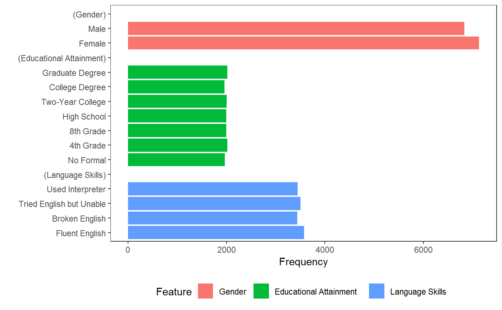
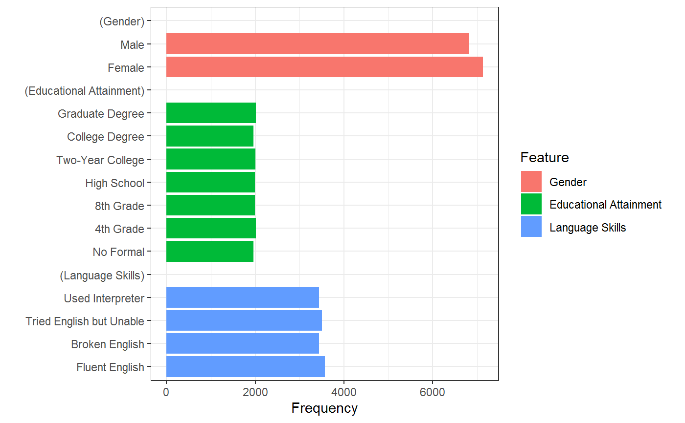
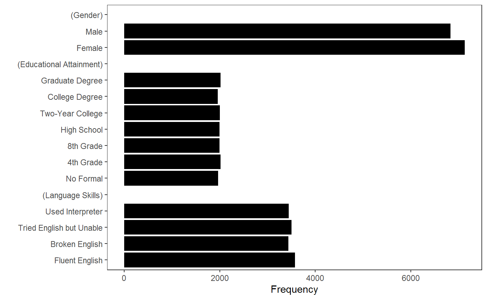

Tabulate and visualize conjoint features, and their display frequencies and proportions
cj_freqs( data, formula, id = NULL, weights = NULL, feature_order = NULL, feature_labels = NULL, level_order = c("ascending", "descending"), ... ) cj_props(data, formula, id, weights = NULL, margin = NULL, ...) cj_table( data, formula, feature_order = NULL, feature_labels = NULL, level_order = c("ascending", "descending"), include_reference = FALSE, ... )
| data | A data frame containing variables specified in |
|---|---|
| formula | An RHS formula specifying conjoint features to tabulate. All RHS variables should be factors; all levels across features should be unique. |
| id | An RHS formula specifying a variable holding respondent identifiers, to be used for clustering standard errors. By default, data are unclustered. |
| weights | An (optional) RHS formula specifying a variable holding survey weights. |
| feature_order | An (optional) character vector specifying the names of feature (RHS) variables in the order they should be encoded in the resulting data frame. |
| feature_labels | A named list of “fancy” feature labels to be used in output. By default, the function looks for a “label” attribute on each variable in |
| level_order | A character string specifying levels (within each feature) should be ordered increasing or decreasing in the final output. This is mostly only consequential for plotting via |
| ... | Ignored. |
| margin | A numeric value passed to |
| include_reference | A logical indicating whether to include a “reference” column that indicates whether a feature level is the reference category for that feature. Default is |
A data frame of class “cj_freqs”, “cj_props”, etc.
These functions provide related but slightly different functionality. cj_table simply creates a data frame of features and their levels, which is useful for printing. cj_props provides tidy proportion tables to examine cross-feature restrictions in conjoint designs that are not equally randomized. This enables, for example, tabulation and visualization of complete restrictions (where combinations of two or more features are not permitted), as well as calculation of AMCEs for constrained designs appropriately weighted by the display proportions for particular combinations of features.
cj_freqs provides marginal display frequencies, which are a descriptive check on the presentation of individual conjoint features (for example, to ensure equal or intentionally unequal appearance of levels). This is mostly useful for plotting functionality provided in plot.cj_freqs, which provides barcharts for the frequency with which each level of each feature was presented.
data(immigration) # identify all levels cj_table(immigration, ~ Gender + Education + LanguageSkills)#> feature level #> 1 Gender Female #> 2 Gender Male #> 3 Educational Attainment No Formal #> 4 Educational Attainment 4th Grade #> 5 Educational Attainment 8th Grade #> 6 Educational Attainment High School #> 7 Educational Attainment Two-Year College #> 8 Educational Attainment College Degree #> 9 Educational Attainment Graduate Degree #> 10 Language Skills Fluent English #> 11 Language Skills Broken English #> 12 Language Skills Tried English but Unable #> 13 Language Skills Used Interpretercj_table(immigration, ~ Gender + Education + LanguageSkills, include_ref = TRUE)#> feature level reference #> 1 Gender Female TRUE #> 2 Gender Male FALSE #> 3 Educational Attainment No Formal TRUE #> 4 Educational Attainment 4th Grade FALSE #> 5 Educational Attainment 8th Grade FALSE #> 6 Educational Attainment High School FALSE #> 7 Educational Attainment Two-Year College FALSE #> 8 Educational Attainment College Degree FALSE #> 9 Educational Attainment Graduate Degree FALSE #> 10 Language Skills Fluent English TRUE #> 11 Language Skills Broken English FALSE #> 12 Language Skills Tried English but Unable FALSE #> 13 Language Skills Used Interpreter FALSE# display frequencies (f <- cj_freqs(immigration, ~ Gender + Education + LanguageSkills, id = ~ CaseID))#> statistic feature level estimate #> 1 frequencies Gender Female 7130 #> 2 frequencies Gender Male 6830 #> 3 frequencies Educational Attainment No Formal 1964 #> 4 frequencies Educational Attainment 4th Grade 2018 #> 5 frequencies Educational Attainment 8th Grade 1998 #> 6 frequencies Educational Attainment High School 1994 #> 7 frequencies Educational Attainment Two-Year College 2005 #> 8 frequencies Educational Attainment College Degree 1963 #> 9 frequencies Educational Attainment Graduate Degree 2018 #> 10 frequencies Language Skills Fluent English 3576 #> 11 frequencies Language Skills Broken English 3440 #> 12 frequencies Language Skills Tried English but Unable 3501 #> 13 frequencies Language Skills Used Interpreter 3443# restrictions ## check display proportions cj_props(immigration, ~ Job, id = ~ CaseID)#> Job Proportion #> 1 Janitor 0.11697708 #> 2 Waiter 0.12335244 #> 3 Child Care Provider 0.12578797 #> 4 Gardener 0.11833811 #> 5 Financial Analyst 0.03488539 #> 6 Construction Worker 0.11876791 #> 7 Teacher 0.12098854 #> 8 Computer Programmer 0.03882521 #> 9 Nurse 0.12399713 #> 10 Research Scientist 0.03868195 #> 11 Doctor 0.03939828## check which combinations were not allowed subset(cj_props(immigration, ~ Job + Education, id = ~ CaseID), Proportion == 0)#> Job Education Proportion #> 5 Financial Analyst No Formal 0 #> 8 Computer Programmer No Formal 0 #> 10 Research Scientist No Formal 0 #> 11 Doctor No Formal 0 #> 16 Financial Analyst 4th Grade 0 #> 19 Computer Programmer 4th Grade 0 #> 21 Research Scientist 4th Grade 0 #> 22 Doctor 4th Grade 0 #> 27 Financial Analyst 8th Grade 0 #> 30 Computer Programmer 8th Grade 0 #> 32 Research Scientist 8th Grade 0 #> 33 Doctor 8th Grade 0 #> 38 Financial Analyst High School 0 #> 41 Computer Programmer High School 0 #> 43 Research Scientist High School 0 #> 44 Doctor High School 0#> Warning: Removed 3 rows containing missing values (position_stack).#> Warning: Removed 3 rows containing missing values (position_stack).## monochrome bars p + ggplot2::scale_fill_manual(values = rep("black", 9)) + ggplot2::theme(legend.position = "none")#> #>#> Warning: Removed 3 rows containing missing values (position_stack).# }